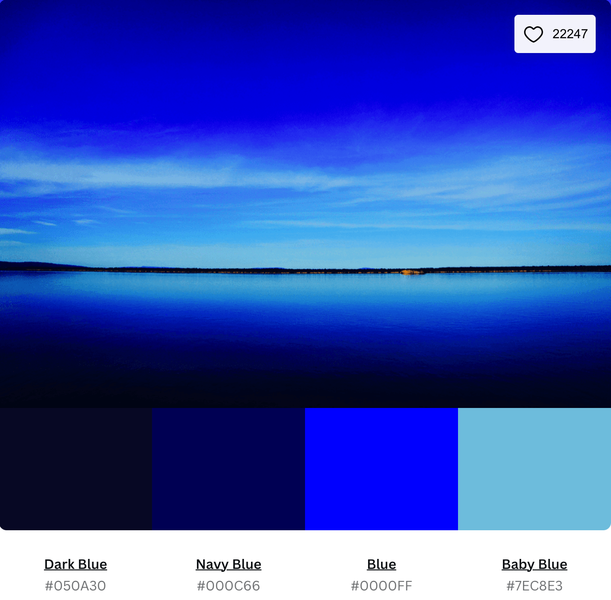
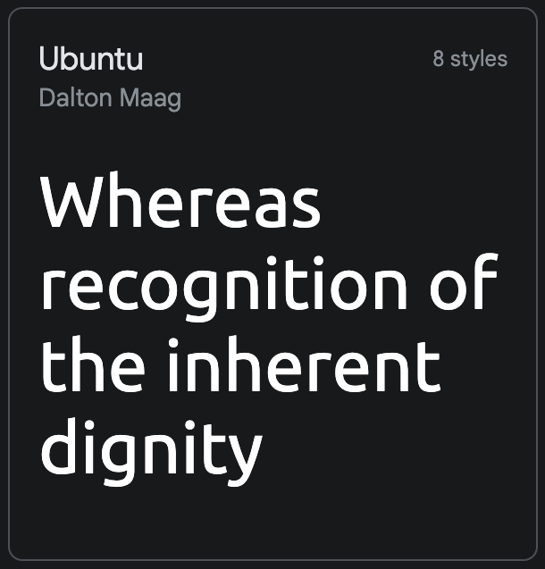
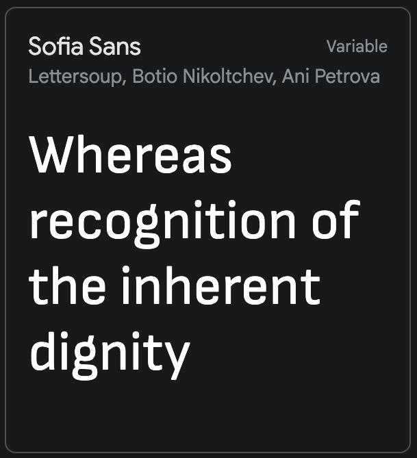

Colour
The colors for the screate chamber of commence are,
Dark blue will be used for the text in the body
navy blue will be used fro the header and the footer
baby blue and the normal blue will be used for special text and words or parts that needs emphasis
Font Type
Ubuntu Font Style
This will be used for the main body
Sofia Sans Font Style
This will be used for my header and footer plus some otheer points in the body that i want to put emphasis on.